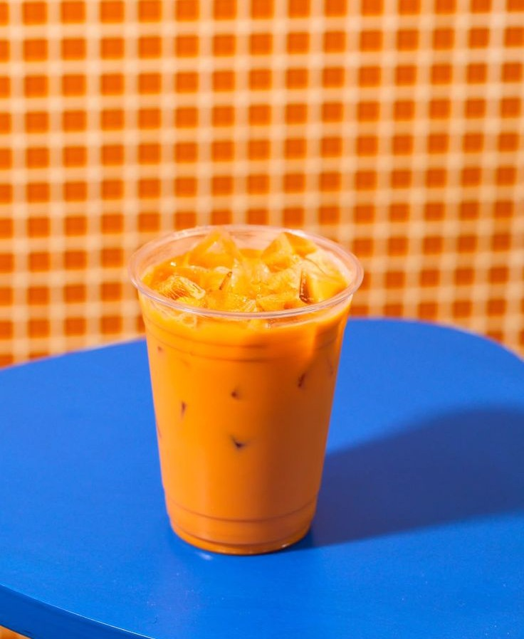

Thai Tea Recipe
Thai tea is a sweet, creamy, and aromatic beverage made from strong black tea, milk, sugar, and often spices, known for its distinctive orange color and rich flavor.
Ingredients
- Thai Tea Mix
- Sugar
- Water
- Half and Half
- Ice Cubes
Steps
- Bring 8 cups of water to a rolling boil in a pot
- 2 cups Thai tea mix
- 1 ½ cup sugar
- Reduce the heat and let it simmer for three minutes and then turn off the stove
- Let it the tea cool down after simmering for three minutes
- Strain the liquid with a straining cloth
- Assemble the drink with a tall glass of ice cups, add tea into the glass until it is about three quarters full.
- Top with milk of choice, for my drink, I use Half and Half. Pour your milk until it turns into a bright orange